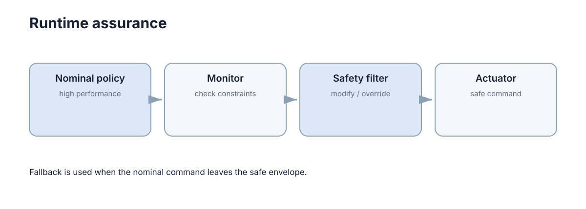

Safe Learning & Runtime Safety
训练阶段加入安全目标，并不能保证部署后模型永远不会遇到新场景。运行时安全的核心思想是：学习策略之外再保留一层独立监控和回退机制。

这一层必须“独立”，因为它要在主策略出错时仍然正确。如果监控与主策略共享同一份状态估计、同一个模型和同一段代码，导致主策略失效的原因通常也会让监控失效——看起来有两层，实际只有一层。
设时刻 \(t\) 的策略动作为 \(u_{nom}(t)\)，允许动作集为 \(\mathcal{U}_\text{safe}\)，监控量向量 \(m(t)\in\mathbb{R}^k\) 含协方差、延迟、置信度等，监控器给出布尔判定 \(a(t)\)。运行时安全要保证：
即在任务时域 \(T\) 内越界概率不超过 \(\delta\)。后面各节的参数选择都是为了让 \(\delta\) 可控。
运行时监控关注的是当前还能不能信任主策略
监控信号可以包括定位协方差、传感器更新时间、控制循环频率、动作是否越界以及模型置信度。系统不需要先知道主策略为什么出错，只要检测到关键安全前提已经失效，就应该降低自动化程度。
这里的判断依据是前提条件而不是输出结果：定位协方差超界意味着下游所有几何推理都不可靠，即使此刻的动作看起来完全正常。等输出异常再反应，往往已经失去了干预时间。
用依赖图看这件事会更清楚。策略输出依赖一串前提 \(P_1,\dots,P_k\)（定位有效、点云新鲜、控制周期按时、模型在分布内），动作的安全性成立要求这些前提同时成立：
监控的职责就是持续评估每个 \(P_i\)。只要任一前提失效，结论就不再成立，无论输出当前看起来多么合理。
| 前提 \(P_i\) | 失效的典型征兆 | 失效后仍“看起来正常”的原因 |
|---|---|---|
| 定位有效 | 协方差增大、重定位触发 | 短时里程计外推仍然平滑 |
| 点云新鲜 | 帧间隔变长、时间戳跳变 | 旧帧仍能产生合理但过时的规划 |
| 控制周期按时 | 周期抖动增大、丢拍 | 低频运行仍能跟随慢速轨迹 |
| 模型在分布内 | OOD 分数升高 | 网络对熟悉外形给出高置信输出 |
| 执行器健康 | 反馈电流异常 | 命令与期望之间的偏差缓慢累积 |
最后两列的“看起来正常”正是沉默失效在软件层的对应物：前提失效不会立刻表现为动作异常，因此必须靠监控前提来提前发现。
| 监控层次 | 观测对象 | 采样频率 | 典型响应 |
|---|---|---|---|
| 状态估计层 | 协方差、残差、收敛标志 | 10–100 Hz | 提高余量、降速 |
| 感知层 | 帧龄、点数、OOD 分数 | 10–30 Hz | 降级传感器融合策略 |
| 控制层 | 周期抖动、饱和标志 | 控制频率 | 限幅、切换回退控制 |
| 任务层 | 进度、重规划频率 | 1–10 Hz | 缩小任务范围 |
| 系统层 | 心跳、资源占用、温度 | 1–10 Hz | 进入安全停止 |
监控信号的量化阈值
阈值定在哪，决定了这套机制是保护还是噪声源。合理的做法是从“容忍误差”反推阈值：
| 监控量 | 阈值来源 | 典型量级 | 越界含义 |
|---|---|---|---|
| 定位协方差 | 允许的位置误差 \(\epsilon\) | \(\sigma_x>0.1\) m 告警 | 安全余量被吃掉 |
| 控制循环周期 | 闭环带宽的 1/10 | 100 Hz 环超 15 ms | 时序契约被破坏 |
| 传感器更新间隔 | 外推可容忍时长 | 激光 >0.3 s 未更新 | 数据可能已过期 |
| 动作越界幅度 | 执行器物理上限 | 超出 \(u_\text{max}\) 5% | 控制器与实际不符 |
| 模型置信度 | 校准后的分布外分数 | OOD 分数超分位点 | 输入已在训练分布外 |
阈值设计的常见错误是用离线平均值的百分比来定，例如“延迟超过平均延迟的两倍就告警”。这类阈值对分布偏移没有意义。更稳的做法是先从任务指标反推可容忍上限，再把阈值设在略低于该上限的位置，并为状态切换留出迟滞区间。
反推过程可以写成一条明确的式子。设可容忍的位置误差上界为 \(\epsilon\)、安全余量需要消耗 \(d_\text{need}\)，则允许的定位标准差近似为
其中 \(k\) 是置信倍数（取 3 表示按 \(3\sigma\) 计）。以 \(\epsilon=0.5\) m、\(d_\text{need}=0.2\) m、\(k=3\) 为例，\(\sigma_x^\text{max}=0.1\) m，正好对应上表那一行的数值。这样得到的阈值有来源、可解释：它直接表达了“当估计不确定性吃掉多少余量时必须干预”。
| 可容忍误差 \(\epsilon\) | 需要的余量 \(d_\text{need}\) | 允许的 \(\sigma_x^\text{max}\)（\(k=3\)） | 动作 |
|---|---|---|---|
| 0.3 m | 0.2 m | 0.033 m | 很严，通常需高频定位 |
| 0.5 m | 0.2 m | 0.100 m | 常见设定 |
| 1.0 m | 0.2 m | 0.267 m | 宽松，适合低速 |
| 1.0 m | 0.5 m | 0.167 m | 高速时需要额外余量 |
监控信号的窗口长度与滤波延迟
瞬时阈值对突变反应快，但误报多；窗口统计更稳，但把检测延迟也拉长了。两者之间存在可计算的权衡。
设监控残差的噪声标准差为 \(\sigma\)、需要检出的真实偏移为 \(\Delta\)。用长度 \(W\) 的滑动均值 \(\bar r = \frac{1}{W}\sum_{i=1}^{W} r_i\) 做判定时，噪声被压低到
若把阈值设为该窗口统计量的 3 倍，则能可靠检出偏移 \(\Delta\) 所需的窗口长度为
| 需要检出的偏移 \(\Delta\) | 所需窗口 \(W\) | 100 Hz 下的检测延迟 | 备注 |
|---|---|---|---|
| \(1.0\sigma\) | 9 | 约 0.09 s | 突变类故障 |
| \(0.5\sigma\) | 36 | 约 0.36 s | 中等漂移 |
| \(0.2\sigma\) | 225 | 约 2.3 s | 缓慢漂移 |
| \(0.1\sigma\) | 900 | 约 9 s | 需配合模型交叉验证 |
这张表给出一个反直觉的结论：检测能力对偏移大小是平方敏感的。要检出的偏移减半，窗口长度与延迟都要变成四倍。因此“既快又灵敏”在单通道上做不到，正确做法是引入独立信息源（第二传感器、运动模型预测）而不是继续加长窗口。
窗口长度还决定了误报的节奏。若用不重叠的窗口、每 \(W\) 个采样做一次判定，\(3\sigma\) 判据的单次误报率约 \(2.7\times10^{-3}\)，在 100 Hz、\(W=36\) 下平均误报间隔
两分多钟一次误报对长时间任务仍然太频繁，因此实际系统通常把窗口阈值提到 \(4\sigma\) 到 \(5\sigma\)，或者要求两种不同类型的证据同时越界才触发降级——后者能把误报率相乘，效果远好于单纯提高单通道阈值。
安全过滤器可以修改不安全动作
策略输出 \(u_{nom}\) 后，过滤器可以检查速度、碰撞距离或动力学可行性。如果满足约束就放行，否则替换成最近的安全动作。这种结构让学习算法不必独自承担“永远不犯错”的责任。
形式上可以在每个控制周期求解
即在安全集合内取离策略建议最近的动作。这个写法的好处是行为可解释：如果 \(u^*=u_{nom}\)，说明策略本身安全；如果偏离很大，偏差本身就是“策略正在提危险建议”的证据，可以直接用于监控与再训练。
差值 \(\lVert u^*-u_{nom}\rVert\) 是一个非常有用的监控量，甚至可以定义一个干预率
| 干预率 \(\rho_\text{int}\) | 解释 | 建议动作 |
|---|---|---|
| 小于 1% | 策略与过滤器基本一致 | 保持，可用于放行更多动作 |
| 1%–5% | 策略偶尔冒险 | 记录并纳入再训练数据 |
| 5%–20% | 策略与约束经常冲突 | 检查指标定义，补训练 |
| 大于 20% | 过滤层在代替主策略 | 主策略不可用，应退回回退策略 |
最后一行的判据很重要：当干预率持续高于 20%，系统实际由过滤器在控制，此时任务性能无法归因于学习策略，继续运行等于在用一个未经验证的控制器。
| 过滤器类型 | 处理耦合约束 | 计算量 | 行为可解释性 |
|---|---|---|---|
| 逐维裁剪 | 否 | 微秒级 | 高（但可能产生非法组合） |
| 最近可行投影 | 是 | 0.1–2 ms | 高（偏差可直接监控） |
| 约束松弛型 QP | 是（允许少量违反） | 0.5–3 ms | 中（需看松弛量） |
| 切换式回退 | 是（整段替换） | 微秒级 | 低（丢弃策略意图） |
watchdog 处理的是系统是否还活着
如果控制节点超过 500 ms 没有心跳，继续使用最后一条速度命令非常危险。watchdog 可以直接触发停车或备用控制。
def watchdog(now, last_update, timeout=0.5):
return "STOP" if now - last_update > timeout else "OK"
timeout 不能凭经验随手给：它应大于正常周期抖动的上界（否则会误停），又小于“控制系统已失去意义”的时间尺度（否则停得太晚）。这两者之间的窗口有时很窄，此时应改进调度确定性而不是继续放宽阈值。
把它写成区间：设控制周期的均值与标准差分别为 \(\mu_P\) 与 \(\sigma_P\)，并设系统在保持最后指令的情况下、从当前状态走出安全域所需的时间为 \(\tau_\text{crit}\)，则
\(\tau_\text{crit}\) 可以用安全余量反推：若当前速度为 \(v\)、可用净空为 \(d\)，则
| 场景 | 周期 \(\mu_P\) | 抖动 \(\sigma_P\) | 下限 \(\mu_P+4\sigma_P\) | 净空与速度 | \(\tau_\text{crit}\) | 可行窗口 |
|---|---|---|---|---|---|---|
| 100 Hz 定位环 | 10 ms | 1 ms | 14 ms | 0.5 m，1.0 m/s | 0.5 s | 很宽 |
| 10 Hz 规划环 | 100 ms | 20 ms | 180 ms | 0.5 m，1.0 m/s | 0.5 s | 宽 |
| 10 Hz 规划环 | 100 ms | 80 ms | 420 ms | 0.3 m，1.0 m/s | 0.3 s | 无解 |
第三行是真实系统的常见困境：抖动大到下限已经超过安全窗口，此时任何取值都会同时造成误停或停得太晚，正确做法是提高周期确定性（实时内核、优先级调度、把重计算移出控制线程）。反过来，timeout 小于下限会因正常抖动而误停，大于 \(\tau_\text{crit}\) 则检测到失联时系统已经越界。
回退策略必须比主策略更简单、更可信
安全回退不追求完成最优任务，而是把系统带回可控状态。停车、悬停、保持姿态、低速返航或请求人工接管都是常见选择。
如果备用策略和主策略依赖相同模型、相同传感器和相同复杂软件链，就可能在同一故障下同时失效。一个可用的检验标准是：回退路径能否在硬件、软件、状态估计三个层面各去掉至少一项主策略的依赖。去掉不了，就要承认这不是真正的冗余。
把这条标准做成核对表：
| 依赖维度 | 主策略典型依赖 | 回退应去掉的项 | 若无法去掉的风险 |
|---|---|---|---|
| 模型 | 学习模型、地图 | 只依赖几何或纯反馈 | 同一次分布偏移同时失效 |
| 传感器 | 相机、激光、IMU 全融合 | 只用 IMU 或只用测距 | 共同退化条件一起失效 |
| 状态估计 | 高精度 SLAM | 直接使用原始测量 | 估计发散时两者一起错 |
| 计算路径 | 同一进程与调度器 | 独立线程或独立控制器 | 死锁或 GC 停顿同时影响 |
| 执行路径 | 同一驱动与总线 | 直接电气限幅或硬停机 | 总线故障时无法停车 |
“回退更简单”本身是可验证的：统计两条路径的依赖模块即可。若回退的依赖集合几乎是主策略依赖集合的子集，它只是主策略的一个分支，而非独立通道。下面的对照表把“看起来独立”与“真正独立”分开：
| 检查项 | 看起来独立 | 真正独立 |
|---|---|---|
| 进程 | 不同模块 | 不同进程 |
| 传感器 | 不同话题 | 不同物理原理 |
| 模型 | 不同网络 | 不含学习模型 |
| 电源 | 不同接口 | 不同供电轨 |
| 失效域 | 代码不同 | 失效机理不同 |
回退策略的覆盖范围与切换安全性
但“更简单”并不自动意味着它在所有状态都安全。系统必须明确主策略被接管时的状态范围，以及回退控制器能否从这些状态恢复到安全区域。若两者覆盖范围不连续，切换瞬间本身就可能成为风险。
具体检查三点：
| 检查项 | 问题 | 失败后果 |
|---|---|---|
| 覆盖范围 | 主策略失败时的状态是否都在回退的稳定域内 | 一旦切换，回退立即发散 |
| 切换瞬态 | 切换瞬间的执行器指令是否连续 | 冲击、饱和、机械损伤 |
| 恢复条件 | 什么条件下允许从回退返回主策略 | 反复切换或过早恢复 |
第二点常被忽略：主策略输出 \(u_1\)、回退输出 \(u_2\) 时，直接硬切换等于给执行器一个阶跃输入。稳妥做法是限制指令变化率，在一小段过渡时间内插值或限幅：
其中 \(T_\text{blend}\) 是过渡时长。若 \(u_1\) 与 \(u_2\) 的差可达执行器量程的 50%，而机械允许的最大加速度对应 \(T_\text{blend}=0.2\) s，那么过渡阶段的加速度约为 \(0.5\,u_\text{max}/0.2 = 2.5\,u_\text{max}\)——超出量程。因此 \(T_\text{blend}\) 必须由执行器能力反推，而不是取一个“看起来平滑”的经验值。
| 切换方式 | 指令连续性 | 对执行器的冲击 | 适用场合 |
|---|---|---|---|
| 硬切换 | 不连续 | 阶跃，可能饱和 | 紧急停机 |
| 速率限幅 | 一阶连续 | 有界 | 一般降级 |
| 一小段内插值 | 连续 | 小 | 模式频繁切换 |
| 先减速再切换 | 连续 | 最小 | 电机类执行器 |
覆盖范围检查也有定量形式：回退控制器的吸引域 \(\mathcal{D}_\text{fb}\) 必须覆盖所有可能触发切换的状态集合 \(\mathcal{S}_\text{trig}\)，即
\(\mathcal{S}_\text{trig}\) 在实践中几乎无法精确枚举，因此常用做法是先限制触发条件：让切换只在速度低于某个值、姿态偏差小于某个角度时发生。这样虽然牺牲了一部分恢复能力，但把 \(\mathcal{S}_\text{trig}\) 收缩成可验证的小集合。
运行时安全最终需要明确状态机
正常运行、警告、降级、紧急停止、人工接管和恢复自动控制之间应有清晰切换条件。这样才能避免故障时多个模块同时“抢着处理”或者没有任何模块负责。
| 状态 | 触发条件 | 系统行为 | 退出条件 |
|---|---|---|---|
| NORMAL | 全部监控量正常 | 完整自动任务 | 任一监控量超界 |
| WARN | 单项指标接近阈值 | 减速、提高监控频率 | 指标恢复稳定 |
| DEGRADED | 关键传感器或估计失效 | 最简任务（低速短程） | 关键指标持续正常 |
| SAFE_STOP | 安全前提无法满足 | 停车并保持可控状态 | 人工复位 |
| HUMAN | 任务超出自动能力 | 交接给操作员 | 操作员交还 |
状态机必须是唯一负责切换的组件。让多个模块各自判断“该不该停车”，会在边界情况下产生相互矛盾的指令。
实现上有一条硬要求：状态转移表必须完备且确定。约定事件集合为 \(\mathcal{E}\)、状态集合为 \(\mathcal{Q}\)，则转移函数
必须是全定义的（不允许出现“未定义行为”）。工程上这意味着对每个 \(\mathcal{Q}\times\mathcal{E}\) 组合都要写出期望行为，哪怕只是“保持当前状态并记录”。漏掉组合的代价是：在故障叠加时系统行为取决于代码执行顺序，而这恰恰是最不可预测的情形。
| 缺失的转移定义 | 可能的表现 | 排查方法 |
|---|---|---|
| DEGRADED 遇到传感器恢复 | 长期滞留在降级状态 | 状态转移矩阵的完备性测试 |
| SAFE_STOP 遇到新告警 | 停机过程被重新触发中断 | 注入叠加故障 |
| HUMAN 遇到超时 | 无人接管却停留在 HUMAN | 超时分支的强制转移 |
| WARN 遇到第二个告警 | 升级不确定，可能停在 WARN | 定义告警计数的升级规则 |
安全状态机要避免频繁来回切换
若定位质量在阈值附近波动，系统可能在 NORMAL 和 DEGRADED 之间不断切换。常见做法是加入 hysteresis：进入降级状态使用更严格阈值，恢复正常则要求更长时间稳定满足条件。
设进入降级阈值为 \(\eta_\text{down}\)、恢复阈值为 \(\eta_\text{up}\)（\(\eta_\text{up}<\eta_\text{down}\)），并要求指标连续 \(T_\text{hold}\) 时间满足恢复条件。抖动抑制效果与代价同时增长：
| 迟滞带宽 \(\eta_\text{down}-\eta_\text{up}\) | 保持时间 \(T_\text{hold}\) | 切换次数 | 恢复延迟 |
|---|---|---|---|
| 无迟滞 | 0 | 可能极高 | 最短 |
| 5% 量程 | 1 s | 中等 | 少量增加 |
| 15% 量程 | 3 s | 很低 | 明显增加 |
恢复延迟本身就是风险：如果系统停留在降级状态过久，任务性能持续受损；如果过早恢复，又可能立刻再次降级。迟滞参数应当由“降级代价”与“误切换代价”的比较来决定，而不是取经验默认值。
切换频率可以量化。设监控量在阈值附近做标准差为 \(\sigma_m\) 的随机游走，迟滞带宽为 \(h\)、保持时间为 \(T_\text{hold}\)，则单位时间内跨越带宽并完成往返的平均次数近似
| 迟滞带宽 \(h\) | \(h/\sigma_m\) | \(f_\text{sw}\)（\(T_\text{hold}=1\) s） | 每小时切换次数 |
|---|---|---|---|
| 0 | 0 | 1 Hz 量级 | 数千 |
| \(1\sigma_m\) | 1 | 约 0.37 Hz | 约 1300 |
| \(2\sigma_m\) | 2 | 约 0.14 Hz | 约 480 |
| \(4\sigma_m\) | 4 | 约 0.018 Hz | 约 66 |
这个指数关系解释了为什么迟滞带宽的收益来得很快：带宽从 \(1\sigma_m\) 增到 \(4\sigma_m\)，切换频率下降约 20 倍，而恢复延迟只增加零点几秒。 相比之下单纯延长 \(T_\text{hold}\) 只是线性收益，且会直接拖长恢复时间。
干预延迟与接管时间预算
如果回退动作是把控制权交给人，那么运行时安全的实际效果取决于人是否来得及接管。设系统发现异常的时刻为 \(t_0\)，操作员完成接管需要
其中 \(T_\text{percept}\) 是操作员感知到告警并理解情境的时间、\(T_\text{decide}\) 是判断采取何种操作的时间、\(T_\text{act}\) 是执行动作的时间。这个总时间必须小于系统在无人干预下的可用时间 \(T_\text{avail}\)，否则交接只是把失效形式从“自动失效”变成了“无人接管”。
| 环节 | 有利条件 | 典型时长 | 不利条件 | 典型时长 |
|---|---|---|---|---|
| 感知 | 明确的视听告警 | 0.5–1 s | 告警淹没在噪声中 | 2–5 s |
| 决策 | 预案唯一且明确 | 0.5–1.5 s | 需要选择方案 | 2–5 s |
| 执行 | 手感熟悉、单键接管 | 0.3–1 s | 需要复杂输入 | 2–6 s |
| 合计 | 设计良好的接管 | 1.3–3.5 s | 设计不良 | 6–16 s |
后一列说明：接管时间在坏设计下可以差出一个数量级，而安全余量通常只有一两秒。因此需要人工介入的场景必须提前缩小 \(T_\text{percept}\) 与 \(T_\text{decide}\)：预先定义唯一的接管动作、给出明确的动作提示、把接管按钮放在触手可及之处。这部分设计与 Intervention & Takeover 讨论的交接设计直接相关。
| 系统策略 | 提前多长时间请求接管 | 依据 |
|---|---|---|
| 只发告警 | 越早越好，常为 5–10 s | 覆盖最坏接管时间 |
| 告警加自动减速 | 3–5 s | 用降速换取接管窗口 |
| 直接进入安全停止 | 不需要 | 不依赖人工 |
| 限时接管后自动回退 | 2–3 s | 超时按预案接管 |
| 分级请求接管 | 5 s 后升级为自动停止 | 兼顾时间与可用性 |
运行时安全的验证：故障注入与红队测试
运行时安全层最容易出的问题不是“逻辑写错”，而是它从未在真实时序下被触发过。验证的重点因此不是覆盖率，而是“能否在预期时间内把系统带到预期状态”。
验证的目标可以写成一组必须同时成立的判据：检测在 \(T_d\) 内触发、回退在 \(T_r\) 内接管、接管后的状态落在安全集合内、且整个过程没有产生违反约束的中间动作。
| 注入项 | 观测指标 | 通过判据 | 常见失败表现 |
|---|---|---|---|
| 定位协方差突增 | 进入 DEGRADED 的时间 | 小于 300 ms | 阈值过宽，未触发 |
| 传感器读数冻结 | 检测延迟与隔离结论 | 延迟在窗口预算内 | 无残差检查，漏报 |
| 控制周期抖动注入 | 周期监控与降级 | 抖动超限即触发 | 监控本身与主循环同线程 |
| 动作越界注入 | 过滤器干预与干预率 | 输出始终在界内 | 裁剪后组合越界 |
| 心跳停止 | watchdog 停车 | 在 timeout 内进入 SAFE_STOP | 回退也依赖同一进程 |
| 接管超时 | 自动回退触发 | 超时后自动进入 SAFE_STOP | 停留在 HUMAN 状态 |
| 叠加故障 | 状态机确定性 | 行为符合转移表 | 进入未定义组合 |
| 回退路径失效注入 | 回退可用性 | 仍存在最终手段 | 无硬件兜底 |
| 告警通道屏蔽 | 告警到达与降级 | 降级仍能触发 | 依赖单一通道 |
| 传感器缓慢漂移 | 检测延迟与累积误差 | 累积误差未超余量 | 只看瞬时阈值 |
| 时钟偏移 | 时间同步误差 | 误差仍在余量内 | 未检查时间戳来源 |
验证还要覆盖回退路径自身的失败：回退控制器不可用、回退所需传感器也失效、告警通道本身故障。这三类最难发现，因为它们要求系统在“安全机制已经不可靠”时仍能进入可控状态——通常的答案是留一条最终手段，例如硬件看门狗或机械制动。
安全机制不仅要能触发，还要保证触发后的行为稳定、可预测：阈值由任务指标反推，窗口长度与检测目标匹配，回退依赖真正独立，状态机转移完备，迟滞由代价比决定，而这一切都需要在真实时序下被验证过。
下一步：运行时安全是最后一道防线，前面几道分别是不确定性监测 Uncertainty & Distribution Shift、约束 Safety Constraints 与故障容错 Fault Detection & Tolerance。控制权交接给人的过程见 Intervention & Takeover，训练阶段的约束形式见 Safe, Robust & Offline RL，实验与部署中的验证流程见 Navigation & Control。